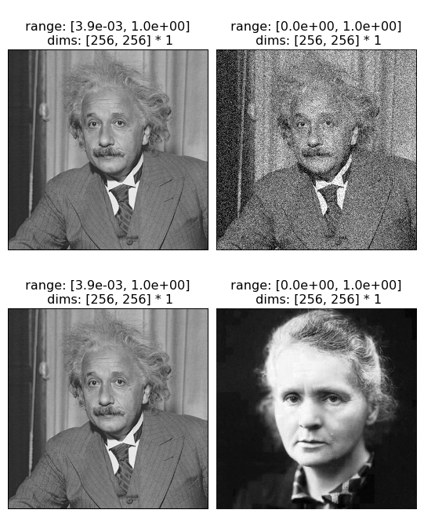
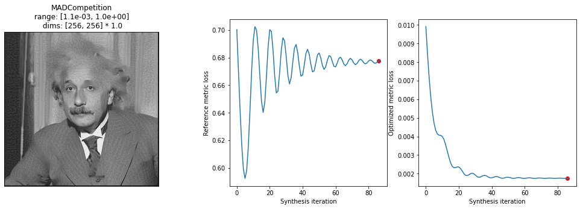
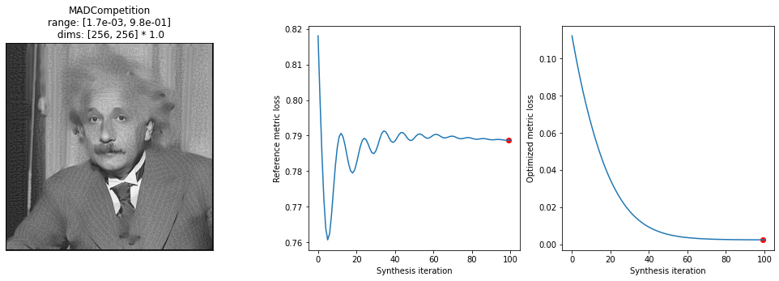
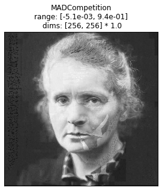

Download
Download this notebook: Synthesis_extensions.ipynb!
Extending existing synthesis objects
Once you are familiar with the existing synthesis objects included in plenoptic, you may wish to change some aspect of their function. For example, you may wish to change how the MADCompetition initializes the MAD image or alter the objective function of Metamer. While you could certainly start from scratch or copy the source code of the object and alter them directly, an easier way to do so is to create a new sub-class: an object that inherits the synthesis object you wish to modify and over-writes some of its existing methods.
For example, you could create a version of MADCompetition that starts with a different natural image (rather than with image argument plus normally-distributed noise) by creating the following object:
import warnings
import matplotlib.pyplot as plt
import torch
from torch import Tensor
import plenoptic as po
# so that relative sizes of axes created by po.imshow and others look right
plt.rcParams["figure.dpi"] = 72
%load_ext autoreload
%autoreload 2
class MADCompetitionVariant(po.synth.MADCompetition):
"""Initialize MADCompetition with an image instead!"""
def setup(
self,
initial_image: Tensor | None = None,
optimizer: torch.optim.Optimizer | None = None,
optimizer_kwargs: dict | None = None,
scheduler: torch.optim.lr_scheduler.LRScheduler | None = None,
scheduler_kwargs: dict | None = None,
):
mad_image = initial_image.clamp(*self.allowed_range)
self._initial_image = mad_image.clone()
mad_image.requires_grad_()
self._mad_image = mad_image
self._reference_metric_target = self.reference_metric(
self.image, self.mad_image
).item()
self._reference_metric_loss.append(self._reference_metric_target)
self._optimized_metric_loss.append(
self.optimized_metric(self.image, self.mad_image).item()
)
# initialize the optimizer
self._initialize_optimizer(optimizer, self.mad_image, optimizer_kwargs)
# and scheduler
self._initialize_scheduler(scheduler, self.optimizer, scheduler_kwargs)
# reset _loaded, if everything ran successfully
self._loaded = False
We can then interact with this new object in the same way as the original MADCompetition object, the only difference being how setup is called:
image = po.data.einstein()
curie = po.data.curie()
new_mad = MADCompetitionVariant(
image,
po.metric.mse,
lambda *args: 1 - po.metric.ssim(*args),
"min",
metric_tradeoff_lambda=0.1,
)
new_mad.setup(curie)
old_mad = po.synth.MADCompetition(
image,
po.metric.mse,
lambda *args: 1 - po.metric.ssim(*args),
"min",
metric_tradeoff_lambda=0.1,
)
old_mad.setup(0.1)
We can see below that the two versions have the same image whose representation they’re trying to match, but very different initial images.
po.imshow(
[
old_mad.image,
old_mad.initial_image,
new_mad.image,
new_mad.initial_image,
],
col_wrap=2,
);

We call synthesize in the same way and can even make use of the original plot_synthesis_status function to see what synthesis looks like
old_mad.synthesize(store_progress=True)
po.synth.mad_competition.plot_synthesis_status(
old_mad, included_plots=["display_mad_image", "plot_loss"]
)
/home/agent/workspace/neurorse_plenoptic_main/lib/python3.11/site-packages/plenoptic/synthesize/mad_competition.py:322: UserWarning: Loss has converged, stopping synthesis
warnings.warn("Loss has converged, stopping synthesis")
(<Figure size 1224x360 with 4 Axes>,
{'display_mad_image': 0, 'plot_loss': [2, 3], 'misc': []})

new_mad.synthesize(store_progress=True)
po.synth.mad_competition.plot_synthesis_status(
new_mad, included_plots=["display_mad_image", "plot_loss"]
)
(<Figure size 1224x360 with 4 Axes>,
{'display_mad_image': 0, 'plot_loss': [2, 3], 'misc': []})

For version initialized with the image of Marie Curie, let’s also examine the metamer shortly after synthesis started, since the final version doesn’t look that different:
po.synth.mad_competition.display_mad_image(new_mad, iteration=10)
<Axes: title={'center': 'MADCompetition\n range: [-5.1e-03, 9.4e-01] \n dims: [256, 256] * 1.0'}>

See the synthesis design page for more description of how the synthesis objects are structured to get ideas for how else to modify them, but some good methods to over-write include (note that not every object uses each of these methods): setup , _check_convergence, and objective_function . For a more serious change, you could also overwrite synthesis and _optimizer_step (and possibly _closure) to really change how synthesis works. See MetamerCTF for an example of how to do this.